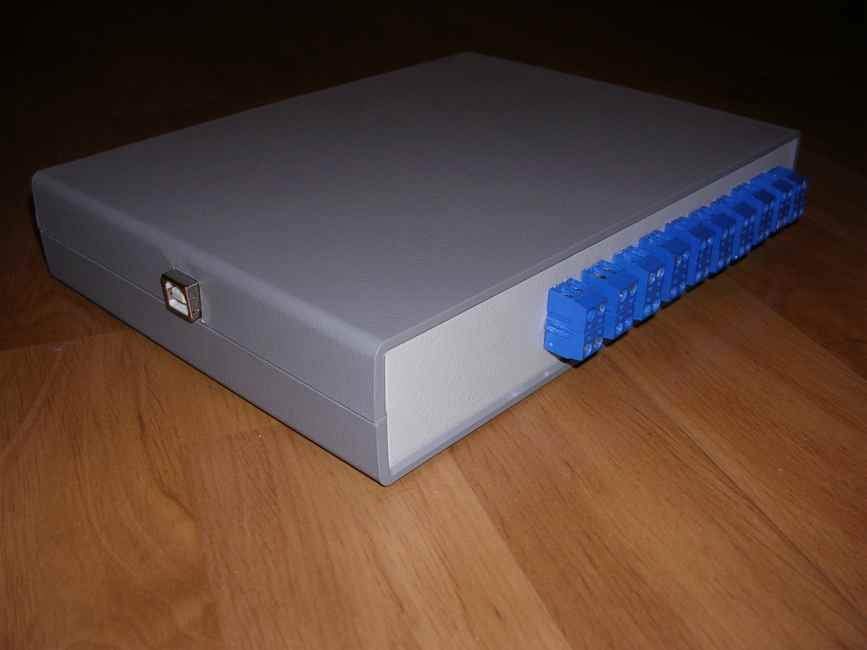

|
Computer equipment
Intel Pentium M713, 1.1 GHz, ULV, 512 Cache,1 GByte RAM
manufactured by
Kontron
40 GByte Harddrive, 64 MByte Removable Flash Memory (CF
LCD resolution: 800x600 ; Touchscreen : resistor-type
|
|
Features |
|
"Handscan" device could be equiped with some features. For example, there is outlet strip ("PILOT") for high-voltage load, which is monitored by "Handscan" via USB (see fig 2). |
|
 | | Fig.2 |
|
"Handscan" device could be equiped with the electronic unit, which is monitored by "Handscan" via USB (see fig 3). This unit contains 20 relay outputs with output current up to 1 A. |
|
 | | Fig.3 |
|
"Handscan" device could be equiped with the unpackeged electronic unit, which is monitored by "Handscan" via USB & TCP/IP (see fig 4). This unit contains relay outputs with output current up to 10 A. |
|
 | | Fig.4 |